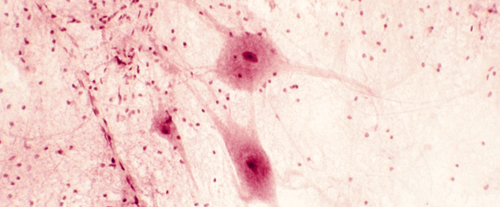

How Drugs Affect the Human Body (2)
Metabolism of a drug happens over time. As a result, depending on which metabolite they are testing for, forensic toxicologists can detect the presence of a drug or one of its metabolites, hours, days, weeks and months after the drug was originally taken. Rohypnol, the date rape drug, can now be tested for in urine up to 8 days after the original dose was taken where as cocaine can be tested for in hair up to 3-6 months after it has been used.
Most psychoactive drugs target the cells of the central nervous system (CNS), which consists of the brain and the spinal cord. Psychoactive drugs tend to alter the activity between the cells of the CNS known as neurons. More specifically, psychoactive drugs change or mimic the actions of the neurotransmitters released by the neurons. When stimulated, neurotransmitters are released by a neuron, and they move from that neuron through a space (called the synapse) towards a receptor neuron. When neurotransmitters come into contact with the receptor neuron, responses are triggered. After a neurotransmitter has triggered a receptor neuron, it is broken down quickly so it no longer produces an effect. Examples of responses that may be triggered by receptor neurons within the CNS are muscle and heart contractions, increased or slowed heart rate, the sensation of pain, the interpretation of visual images, emotions, and sleep.
